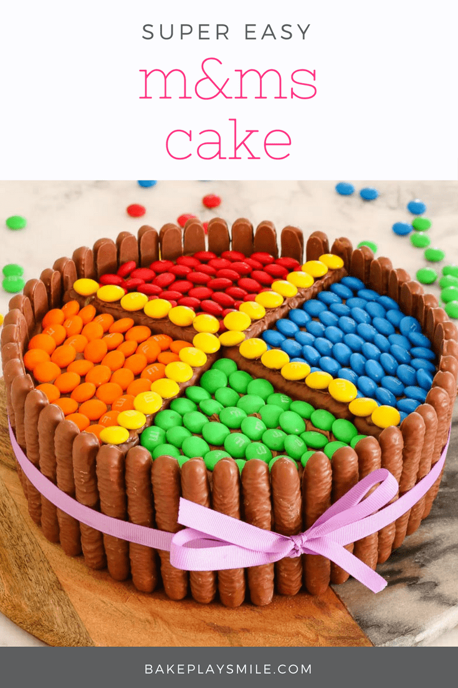

M&Ms Chocolate Cake

This M&Ms chocolate cake is the perfect birthday cake! It's so simple to make and looks amazing decorated with chocolate biscuits, frosting & M&Ms!
Ingredients:
- 1 chocolate cake (see notes for the recipe I used)
- 450 g chocolate frosting storebought or homemade
- 400 g chocolate finger biscuits
- 400 g M&Ms
Steps:
- Make the chocolate cake according to the instructions (or use a bought one). Allow to cool completely.
- Cover the top and sides of the cake with frosting.
- Decorate the sides of the cake with the chocolate finger biscuits.
- Add chocolate fingers biscuits to the top of the cake to act as dividers for the M&Ms.
- Place the M&Ms into the different sections of the cake.
- Add a small amount of frosting to the top of the chocolate fingers biscuits on the top of the cake and cover with extra M&Ms.
- Tie a ribbon around the outside of the cake.
Go back home